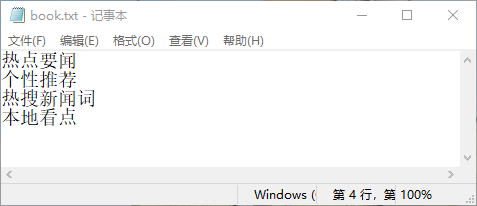

首页 > Java教程 > Java输入/输出流
Java字符流的使用：字符输入/输出流、字符文件和字符缓冲区的输入/输出流
尽管 Java 中字节流的功能十分强大，几乎可以直接或间接地处理任何类型的输入/输出操作，但利用它却不能直接操作 16 位的 Unicode 字符。这就要用到字符流。本节将重点介绍字符流的操作。
Reader 类的常用子类如下。
与 InputStream 类相同，在 Reader 类中也包含 close()、mark()、skip() 和 reset() 等方法，这些方法可以参考 InputStream 类的方法。下面主要介绍 Reader 类中的 read() 方法，如表 1 所示。
Writer 类的常用子类如下。
与 OutputStream 类相同，Writer 类也包含 close()、flush() 等方法，这些方法可以参考 OutputStream 类的方法。下面主要介绍 Writer 类中的 write() 方法和 append() 方法，如表 2 所示。
注意：Writer 类所有的方法在出错的情况下都会引发 IOException 异常。关闭一个流后，再对其进行任何操作都会产生错误。
在用该类的构造方法创建 FileReader 读取对象时，默认的字符编码及字节缓冲区大小都是由系统设定的。要自己指定这些值，可以在 FilelnputStream 上构造一个 InputStreamReader。
注意：在创建 FileReader 对象时可能会引发一个 FileNotFoundException 异常，因此需要使用 try catch 语句捕获该异常。
字符流和字节流的操作步骤相同，都是首先创建输入流或输出流对象，即建立连接管道，建立完成后进行读或写操作，最后关闭输入/输出流通道。
在创建 FileWriter 对象时，默认字符编码和默认字节缓冲区大小都是由系统设定的。要自己指定这些值，可以在 FileOutputStream 上构造一个 OutputStreamWriter 对象。
FileWriter 类的创建不依赖于文件存在与否，如果关联文件不存在，则会自动生成一个新的文件。在创建文件之前，FileWriter 将在创建对象时打开它作为输出。如果试图打开一个只读文件，将引发一个 IOException 异常。
注意：在创建 FileWriter 对象时可能会引发 IOException 或 SecurityException 异常，因此需要使用 try catch 语句捕获该异常。
运行该程序，根据提示输入 4 个字符串，如下所示。接着打开 D:\myJava\book.txt 文件，将看到写入的内容，如图 1 所示。
BufferedReader 类的构造方法有如下两种重载形式。
除了可以为字符输入流提供缓冲区以外，BufferedReader 还提供了
运行该程序，输出结果如下所示：
BufferedWriter 类的构造方法有如下两种重载形式。
该类除了可以给字符输出流提供缓冲区之外，还提供了一个新的方法 newLine()，该方法用于写入一个行分隔符。行分隔符字符串由系统属性 line.separator 定义，并且不一定是单个新行（\n）符。
提示：BufferedWriter 类的使用与 FileWriter 类相同，这里不再重述。
字符输入流
Reader 类是所有字符流输入类的父类，该类定义了许多方法，这些方法对所有子类都是有效的。Reader 类的常用子类如下。
- CharArrayReader 类：将字符数组转换为字符输入流，从中读取字符。
- StringReader 类：将字符串转换为字符输入流，从中读取字符。
- BufferedReader 类：为其他字符输入流提供读缓冲区。
- PipedReader 类：连接到一个 PipedWriter。
- InputStreamReader 类：将字节输入流转换为字符输入流，可以指定字符编码。
与 InputStream 类相同，在 Reader 类中也包含 close()、mark()、skip() 和 reset() 等方法，这些方法可以参考 InputStream 类的方法。下面主要介绍 Reader 类中的 read() 方法，如表 1 所示。
| 方法名及返回值类型 | 说明 |
|---|---|
| int read() |
从输入流中读取一个字符，并把它转换为 0~65535 的整数。如果返回 -1， 则表示 已经到了输入流的末尾。为了提高 I/O 操作的效率，建议尽量使用下面两种 read() 方法 |
| int read(char[] cbuf) |
从输入流中读取若干个字符，并把它们保存到参数 cbuf 指定的字符数组中。 该方 法返回读取的字符数，如果返回 -1，则表示已经到了输入流的末尾 |
| int read(char[] cbuf,int off,int len) |
从输入流中读取若干个字符，并把它们保存到参数 cbuf 指定的字符数组中。其中， off 指定在字符数组中开始保存数据的起始下标，len 指定读取的字符数。该方法返 回实际读取的字符数，如果返回 -1，则表示已经到了输入流的末尾 |
字符输出流
与 Reader 类相反，Writer 类是所有字符输出流的父类，该类中有许多方法，这些方法对继承该类的所有子类都是有效的。Writer 类的常用子类如下。
- CharArrayWriter 类：向内存缓冲区的字符数组写数据。
- StringWriter 类：向内存缓冲区的字符串（StringBuffer）写数据。
- BufferedWriter 类：为其他字符输出流提供写缓冲区。
- PipedWriter 类：连接到一个 PipedReader。
- OutputStreamReader 类：将字节输出流转换为字符输出流，可以指定字符编码。
与 OutputStream 类相同，Writer 类也包含 close()、flush() 等方法，这些方法可以参考 OutputStream 类的方法。下面主要介绍 Writer 类中的 write() 方法和 append() 方法，如表 2 所示。
| 方法名及返回值类型 | 说明 |
|---|---|
| void write(int c) | 向输出流中写入一个字符 |
| void write(char[] cbuf) | 把参数 cbuf 指定的字符数组中的所有字符写到输出流中 |
| void write(char[] cbuf,int off,int len) |
把参数 cbuf 指定的字符数组中的若干字符写到输出流中。其中，off 指定 字符数组中的起始下标，len 表示元素个数 |
| void write(String str) | 向输出流中写入一个字符串 |
| void write(String str, int off,int len) |
向输出流中写入一个字符串中的部分字符。其中，off 指定字符串中的起 始偏移量，len 表示字符个数 |
| append(char c) | 将参数 c 指定的字符添加到输出流中 |
| append(charSequence esq) | 将参数 esq 指定的字符序列添加到输出流中 |
| append(charSequence esq,int start,int end) |
将参数 esq 指定的字符序列的子序列添加到输出流中。其中，start 指定 子序列的第一个字符的索引，end 指定子序列中最后一个字符后面的字符 的索引，也就是说子序列的内容包含 start 索引处的字符，但不包括 end 索引处的字符 |
注意：Writer 类所有的方法在出错的情况下都会引发 IOException 异常。关闭一个流后，再对其进行任何操作都会产生错误。
字符文件输入流
为了读取方便，Java 提供了用来读取字符文件的便捷类——FileReader。该类的构造方法有如下两种重载形式。- FileReader(File file)：在给定要读取数据的文件的情况下创建一个新的 FileReader 对象。其中，file 表示要从中读取数据的文件。
- FileReader(String fileName)：在给定从中读取数据的文件名的情况下创建一个新 FileReader 对象。其中，fileName 表示要从中读取数据的文件的名称，表示的是一个文件的完整路径。
在用该类的构造方法创建 FileReader 读取对象时，默认的字符编码及字节缓冲区大小都是由系统设定的。要自己指定这些值，可以在 FilelnputStream 上构造一个 InputStreamReader。
注意：在创建 FileReader 对象时可能会引发一个 FileNotFoundException 异常，因此需要使用 try catch 语句捕获该异常。
字符流和字节流的操作步骤相同，都是首先创建输入流或输出流对象，即建立连接管道，建立完成后进行读或写操作，最后关闭输入/输出流通道。
例 1
要将 D:\myJava\HelloJava.java 文件中的内容读取并输出到控制台，使用 FileReader 类的实现代码如下：
public class Test12 {
public static void main(String[] args) {
FileReader fr = null;
try {
fr = new FileReader("D:/myJava/HelloJava.java"); // 创建FileReader对象
int i = 0;
System.out.println("D:\\myJava\\HelloJava.java文件内容如下：");
while ((i = fr.read()) != -1) { // 循环读取
System.out.print((char) i); // 将读取的内容强制转换为char类型
}
} catch (Exception e) {
System.out.print(e);
} finally {
try {
fr.close(); // 关闭对象
} catch (IOException e) {
e.printStackTrace();
}
}
}
}
如上述代码，首先创建了 FileReader 字符输入流对象 fr，该对象指向 D:\myJava\HelloJava.java 文件，然后定义变量 i 来接收调用 read() 方法的返回值，即读取的字符。在 while 循环中，每次读取一个字符赋给整型变量 i，直到读取到文件末尾时退出循环（当输入流读取到文件末尾时，会返回值 -1）。
字符文件输出流
Java 提供了写入字符文件的便捷类——FileWriter，该类的构造方法有如下 4 种重载形式。- FileWriter(File file)：在指定 File 对象的情况下构造一个 FileWriter 对象。其中，file 表示要写入数据的 File 对象。
- FileWriter(File file,boolean append)：在指定 File 对象的情况下构造一个 FileWriter 对象，如果 append 的值为 true，则将字节写入文件末尾，而不是写入文件开始处。
- FileWriter(String fileName)：在指定文件名的情况下构造一个 FileWriter 对象。其中，fileName 表示要写入字符的文件名，表示的是完整路径。
- FileWriter(String fileName,boolean append)：在指定文件名以及要写入文件的位置的情况下构造 FileWriter 对象。其中，append 是一个 boolean 值，如果为 true，则将数据写入文件末尾，而不是文件开始处。
在创建 FileWriter 对象时，默认字符编码和默认字节缓冲区大小都是由系统设定的。要自己指定这些值，可以在 FileOutputStream 上构造一个 OutputStreamWriter 对象。
FileWriter 类的创建不依赖于文件存在与否，如果关联文件不存在，则会自动生成一个新的文件。在创建文件之前，FileWriter 将在创建对象时打开它作为输出。如果试图打开一个只读文件，将引发一个 IOException 异常。
注意：在创建 FileWriter 对象时可能会引发 IOException 或 SecurityException 异常，因此需要使用 try catch 语句捕获该异常。
例 2
编写一个程序，将用户输入的 4 个字符串保存到 D:\myJava\book.txt 文件中。在这里使用 FileWriter 类中的 write() 方法循环向指定文件中写入数据，实现代码如下：
public class Test13 {
public static void main(String[] args) {
Scanner input = new Scanner(System.in);
FileWriter fw = null;
try {
fw = new FileWriter("D:\\myJava\\book.txt"); // 创建FileWriter对象
for (int i = 0; i < 4; i++) {
System.out.println("请输入第" + (i + 1) + "个字符串：");
String name = input.next(); // 读取输入的名称
fw.write(name + "\r\n"); // 循环写入文件
}
System.out.println("录入完成！");
} catch (Exception e) {
System.out.println(e.getMessage());
} finally {
try {
fw.close(); // 关闭对象
} catch (IOException e) {
e.printStackTrace();
}
}
}
}
如上述代码，首先创建了一个指向 D:\myJava\book.txt 文件的字符文件输出流对象 fw，然后使用 for 循环录入 4 个字符串，并调用 write() 方法将字符串写入到指定的文件中。最后在 finally 语句中关闭字符文件输出流。运行该程序，根据提示输入 4 个字符串，如下所示。接着打开 D:\myJava\book.txt 文件，将看到写入的内容，如图 1 所示。
请输入第1个字符串： 热点要闻 请输入第2个字符串： 个性推荐 请输入第3个字符串： 热搜新闻词 请输入第4个字符串： 本地看点 录入完成！

图 1 book.txt 文件内容
图 1 book.txt 文件内容
字符缓冲区输入流
BufferedReader 类主要用于辅助其他字符输入流，它带有缓冲区，可以先将一批数据读到内存缓冲区。接下来的读操作就可以直接从缓冲区中获取数据，而不需要每次都从数据源读取数据并进行字符编码转换，这样就可以提高数据的读取效率。BufferedReader 类的构造方法有如下两种重载形式。
- BufferedReader(Reader in)：创建一个 BufferedReader 来修饰参数 in 指定的字符输入流。
- BufferedReader(Reader in,int size)：创建一个 BufferedReader 来修饰参数 in 指定的字符输入流，参数 size 则用于指定缓冲区的大小，单位为字符。
除了可以为字符输入流提供缓冲区以外，BufferedReader 还提供了
readLine() 方法，该方法返回包含该行内容的字符串，但该字符串中不包含任何终止符，如果已到达流末尾，则返回 null。readLine() 方法表示每次读取一行文本内容，当遇到换行（\n）、回车（\r）或回车后直接跟着换行标记符即可认为某行已终止。
例 3
使用 BufferedReader 类中的 readLine() 方法逐行读取 D:\myJava\Book.txt 文件中的内容，并将读取的内容在控制台中打印输出，代码如下：
public class Test13 {
public static void main(String[] args) {
FileReader fr = null;
BufferedReader br = null;
try {
fr = new FileReader("D:\\myJava\\book.txt"); // 创建 FileReader 对象
br = new BufferedReader(fr); // 创建 BufferedReader 对象
System.out.println("D:\\myJava\\book.txt 文件中的内容如下：");
String strLine = "";
while ((strLine = br.readLine()) != null) { // 循环读取每行数据
System.out.println(strLine);
}
} catch (FileNotFoundException e1) {
e1.printStackTrace();
} catch (IOException e) {
e.printStackTrace();
} finally {
try {
fr.close(); // 关闭 FileReader 对象
br.close();
} catch (IOException e) {
e.printStackTrace();
}
}
}
}
如上述代码，首先分别创建了名称为 fr 的 FileReader 对象和名称为 br 的 BufferedReader 对象，然后调用 BufferedReader 对象的 readLine() 方法逐行读取文件中的内容。如果读取的文件内容为 Null，即表明已经读取到文件尾部，此时退出循环不再进行读取操作。最后将字符文件输入流和带缓冲的字符输入流关闭。运行该程序，输出结果如下所示：
D:\myJava\book.txt 文件中的内容如下： 热点要闻 个性推荐 热搜新闻词 本地看点
字符缓冲区输出流
BufferedWriter 类主要用于辅助其他字符输出流，它同样带有缓冲区，可以先将一批数据写入缓冲区，当缓冲区满了以后，再将缓冲区的数据一次性写到字符输出流，其目的是为了提高数据的写效率。BufferedWriter 类的构造方法有如下两种重载形式。
- BufferedWriter(Writer out)：创建一个 BufferedWriter 来修饰参数 out 指定的字符输出流。
- BufferedWriter(Writer out,int size)：创建一个 BufferedWriter 来修饰参数 out 指定的字符输出流，参数 size 则用于指定缓冲区的大小，单位为字符。
该类除了可以给字符输出流提供缓冲区之外，还提供了一个新的方法 newLine()，该方法用于写入一个行分隔符。行分隔符字符串由系统属性 line.separator 定义，并且不一定是单个新行（\n）符。
提示：BufferedWriter 类的使用与 FileWriter 类相同，这里不再重述。
关注公众号「站长严长生」，在手机上阅读所有教程，随时随地都能学习。内含一款搜索神器，免费下载全网书籍和视频。

微信扫码关注公众号